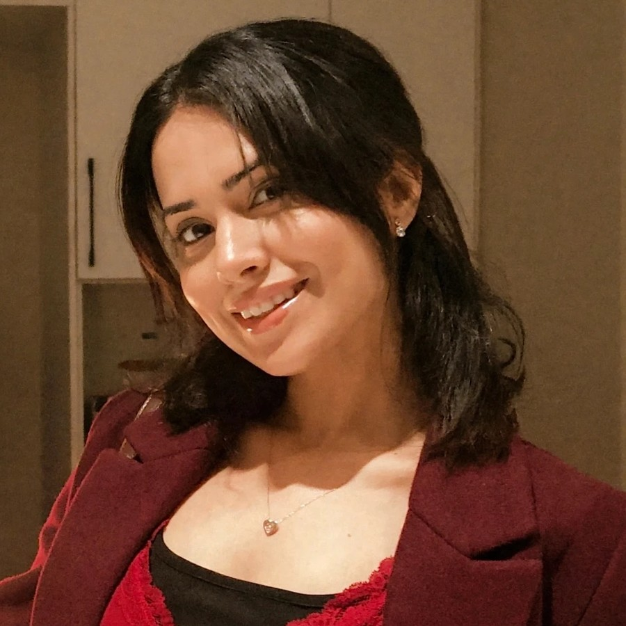

Ushna Malik

Hi! I am Ushna, a second-year PhD student in Computer Science at the University of Iowa, where I work with Rishab Nithyanand in the SPARTA Lab.
My research examines how generative AI shapes human decision-making, learning, and communication. I combine audits of AI systems with human-subjects studies to examine what information these systems surface and how it influences people’s judgments, beliefs, and behavior. I investigate these questions in high-stakes domains, including healthcare and politics. My current work focuses on how the shift from conventional web search to AI-mediated information seeking shapes information exposure, learning, and trust.
Before UIowa, I attended the Lahore University of Management Sciences, where I graduated with Distinction with a BSc in Computer Science.
I am always interested in research collaborations and summer/winter research internships in computational social science, human-AI interaction, responsible AI, and software engineering. Please feel free to reach out with opportunities or suggestions!
You can reach me at mushna@uiowa.edu.
News
| Oct 2026 | Attending CSCW 2026 as a student volunteer, where I will present The Assistant Erased You. |
|---|---|
| Sep 2026 | Our short paper, The Assistant Erased You, was accepted to the CSCW 2026 Workshop on the Broader Impacts of Generative AI in Communication. |
| Apr 2026 | Presented my first paper, Prompting, Oversight, and Adoption, at CHI 2026 in Barcelona. |
| Aug 2025 | Started my PhD in Computer Science at the University of Iowa. |
| May 2025 | Graduated with Distinction from LUMS. |